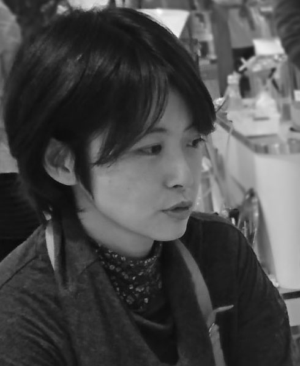

profile
古川理絵
群馬県前橋市出身
今年から東京在住
■主な活動歴
- 1997年
- ろう画の技法に出会い、描き始める
- 1998年
- 猫キャラクターが教える「ろう画の描き方」動画を制作
- 1999年～
- フリーマーケット・デザインフェスタ・グループ展などに参加を始め、多くの猫・動物好きさんたちと出会う
- 1999年
- ろう画作品展「ぽっからり２人展」（群馬・前橋市）開催
- 2001年
- 群馬県のフリーマーケットでは珍しいアート系で多数出展し、手作り猫グッズ制作に力を入れる。その後、会社勤務とともに活動
- 2005年
- ねこらんまん展（群馬・高崎市）
- 2013年
- ねこらんまん展 in 百段階段（東京）
- 2016年
- 夏猫展（群馬・高崎市 大和屋）
- 2017年
- ねこらんまん展 in ぐんま
- 2018年 018年
- ねこらんまん展 in 赤レンガ倉庫 （横浜）
- 作家活動に専念
作品作りは映像制作の仕事のかたわらやってきました。2018年からは作品活動を進められるような生活を始めました。